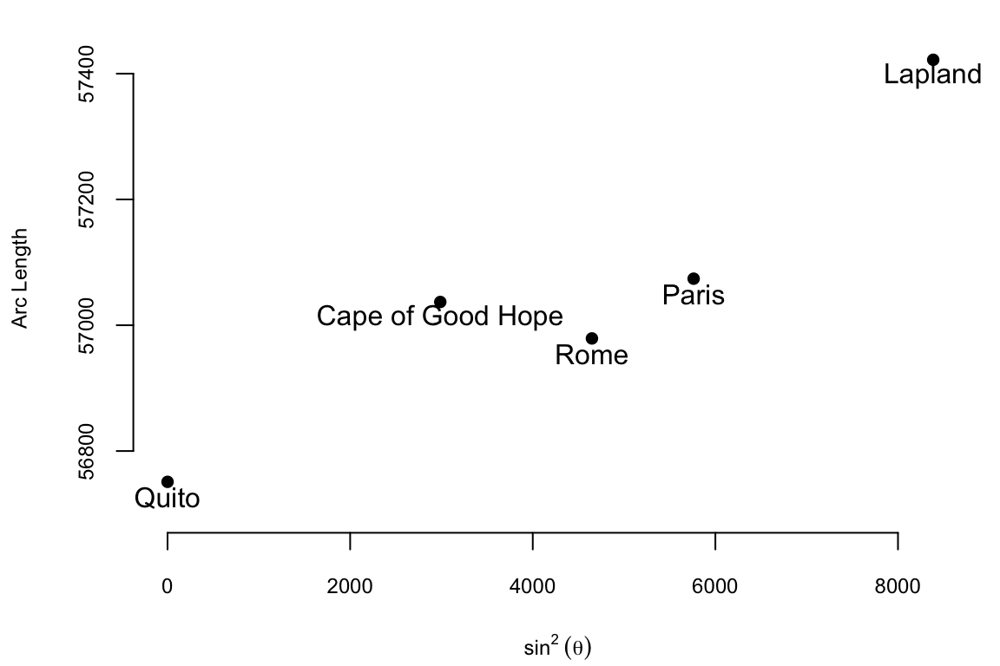
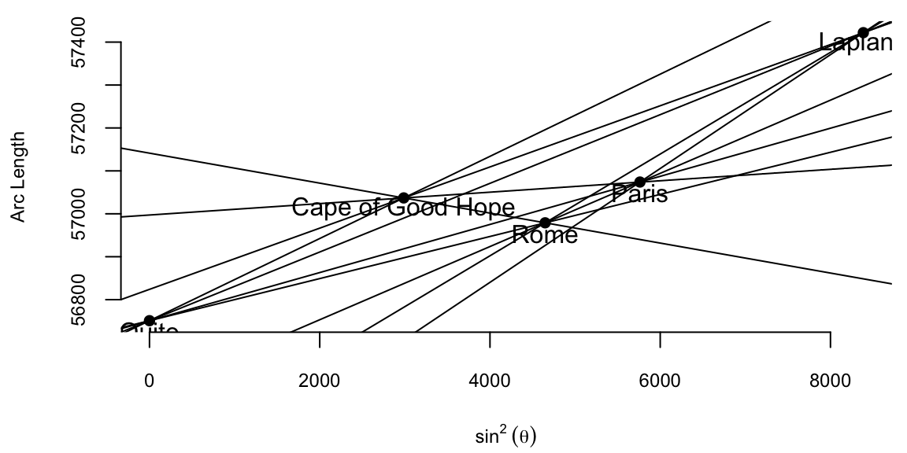
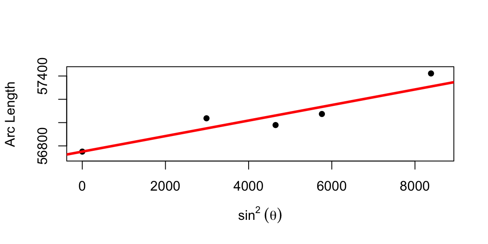
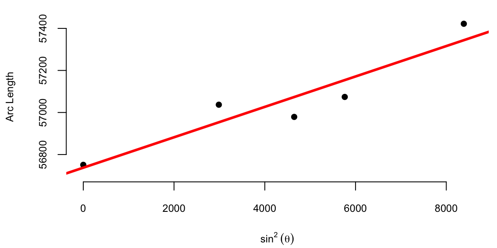
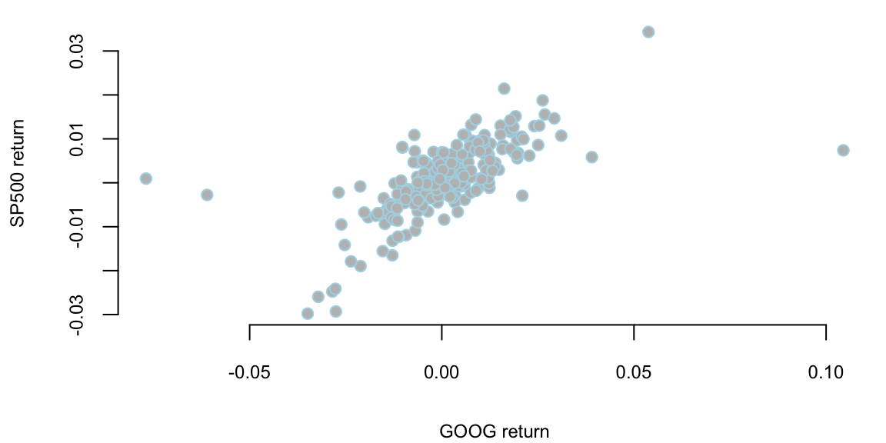

flowchart LR
x((x)) -->f
f--> y((y))
11 Pattern Matching and Data Analysis
The history of data analysis is closely intertwined with the development of pattern matching techniques. The ability to identify and understand patterns in data has been crucial for scientific discoveries, technological advancements, and decision-making. From the early days of astronomy to modern machine learning, pattern matching has played a pivotal role in advancing our understanding of the world around us. This chapter explores the historical development of pattern matching and its impact on data analysis, highlighting key figures and their contributions to the field.
Data science involves two major steps, collection and cleaning of large scale data sets and building a predictive model. In this chapter present the process of building predictive models. To illustrate the process think of your data as being generated by a black box on which a set of input variables \(x\) go through the box and generate an output variable \(y\). A black box can be viewed as a model which describes how to find the output \(y\) from the input \(x\). One of the key requirement of \(f\) is that we should be able to efficiently find this function using an algorithm. In the simple case \(y\) and \(x\) are both univariate (scalars) and we can view the map as
Here the function \(f\) provides the mapping \(y = f(x)\). The goal of machine learning is to reconstruct this this map from observed data. In a multivariate setting \(x = (x_1,\ldots,x_p)\) is a list of \(p\) variables. The hallmark nature of artificial intelligence (AI) is that \(p\) can be extremely large. A multivariate map corresponds to a black box
flowchart LR
x(("(x1...,xp)")) -->f
f--> y((y))
This leads to a model of the form \(y = f(x_1,\ldots,x_p)\). There are a number of possible goals of analysis, such as estimation, inference or prediction. The main one being prediction.
The prediction task is to calculate a response that corresponds to a new feature input variable and the task of establishing a causation is to extract information about the nature of the black box association of the response variable to the input variables. The goal is to use data to find a pattern that we can exploit. The pattern will be ``statistical” in its nature. To uncover the pattern we start with a dataset, denoted by \[ D = (y_i,x_i)_{i=1}^n \] and to test the validity of our mode we use out-of-sample dataset \[ D^* = (y_j^*, x_j^*)_{j=1}^N, \] where \(x_i\) is a set of \(p\) predictors ans \(y_i\) is response variable. Prediction problem is to use a training dataset \(D\) to design a rule that can be used for predicting output values \(y\) for new observations \(x\).
Let \(f(x)\) be predictor of \(y\), we will use notation \[\hat{y} = f(x).\]
To summarize, we will use the following notation.
| \(y\) | response/outcome/output variable |
|---|---|
| \(x\) | predictor/covariate/feature/input variable |
| \(f(x)\) | regression/classification/function estimation |
| \(\hat y\) | prediction |
The process of building a model involves specification of three items
- How inputs are specified and what are the outputs?
- How to construct the function \(f\), i.e. what algorithms to use and how to implement it?
- What is the criteria to choose the best reconstructed function \(f\)?
We distinguish several types of input or output variables. First, variables that can only have two possible values, e.g. yes/no, left/right, 0/1, up/down, etc. A generalization of binary variable is a variable that can take a fixed number of possible values, for example, marriage status, number of vehicles owned. Additionally, some of the categorical variable can have a natural order to them, for example education level or salary range. Those variables are called . Lastly, the most common type of a variable is which is described by a real number.
Depending on the type of the output variable, there are three types of prediction problems
- When \(y\) is binary \(y\in \{0,1\}\) or categorical, \(y\in \{0,\ldots,K\}\), for \(K\) possible categories, the prediction problem is called classification.
- When \(y\) is quantitative \(y \in R\). This is known as a regression.
- When \(y\) is ordinal, this problem known as ranking.
Let us consider a few example problems that demonstrate the concepts of inputs, output and map.
Example 11.1 Consider the problem of medical diagnostics. In the previous chapter we considered a probabilistic formulation of this problem. Now we consider a problem of building a deterministic map between inputs: parameters of the patient at the given time and outputs: diagnosis or treatment. For example we have an incoming patient and do not have a doctor of the needed specialty to diagnose the patient. The goal is to design an algorithm that can replace the doctor and help the admitting nurse or hospitalist to make the decision. Examples of inputs can be
- binary: gender, headache, fatigue, vomit, etc.
- ordinal: severity of the conditions, hemoglobin level
- quantitative: age, pulse, blood pressure
The output variable is categorical, thus we are solving the problem of classification.
In the problem of medical diagnostics we have to consider not only the problem of finding the best map but also problems of missing data, algorithm interpretability and it’s reliability, i.e. probabilistic measure of the accuracy. Probabilistic view, that we will discuss later in the chapter, can help assessing the reliability of our models.
Example 11.2 Credit scoring is another area where predictive models are currently widely used. The problem us to predict whether a specific loan will default or not. The input variable come from the application form and the output variable is binary: yes or no. Examples of input variable include
- binary: gender, home ownership
- categorical: profession, home zip code
- ordinal: education, job position
- quantitative: age, salary, work experience, loans
This is again a classification problem.
Example 11.3 Another economic example the problem of predicting revenue associated with each new client or a customer. For example on car insurance market, which is very mature, the problem is to predict what coverage a customer will buy and what are expenses associated with potential accidents. The examples of input variables are
- binary: corporate client, optional coverages
- categorical: types of coverage, location
- quantitative: age, accident frequency
The problem of predicting revenue is the regression problem.
%Typically we have the following types of inputs: % %- \(X \in \{0,1\}\) binary input %- \(X \in \{1,\ldots,M\}\) categorical input %- \(X \in \{1,\ldots,M\}\) and \(Y_j\) has natural order to it - ordinal input %- \(X \in R\) - quantitative input % % %Now, let’s enumerate different types of outputs % %- \(Y \in \{0,1\}\) (binary classification) %- \(Y \in \{1,\ldots,K\}\) - \(K\) non-overlapping classes (classification) %- \(Y \in \{0,1\}^K\) - \(K\) overlapping classes (classification) %- \(Y \in R^m\) (regression) %- \(Y \in O\), \(O\) is an ordered set (ranking) %
We start with the most widely used type of predictive models, namely the parametric models. To find a parametric model, we search for a predictive rule among a parametrized family of functions \[ F_{\beta} = \{f(x \mid \beta) \mid \beta \in B\} \] here \(f:X\times B \rightarrow Y\) is a fixed function and \(B\) is a set of all possible values of the parameter \(\beta\).
There are a number of possibilities to specify such a family of functions:
- Linear combinations of inputs, e.g., \(f(x)=\beta_0+\beta_1x\)
- Expand in terms of a set of basis functions, e.g., \(f(x)=\sum_{j=1}^M \beta_j \psi_j(x)\), where \(\psi_j\) are given. Deep Learning/ Neural Net, generalizes this to \(\sum_{j=1}^M b_j \psi_j (w_j x+a_j)\)
The goal of the modeler to choose an appropriate family of functions that does lead to a good reconstruction of the input-output relations (we will talk about the measure of goodness later) as well as simple to compute and interpret.
When \(x\) and \(y\) are real numbers, the simplest example of such a family of functions for a regression problem are the linear functions \[ f(x\mid \beta) = \beta_0 + \beta_1 x \] or for classification \[ f(x\mid \beta) = \mathrm{sign}\left(\beta_0 + \beta_1 x\right) \] Here the parameters \(\beta = (\beta_0,\beta_1)\) are the constant and intercept parameters of our linear equation. We assume there is a linear relation between the input variable \(x\) and output \(y\). In the binary classification case, we use the \(\mathrm{sign}\) function to map a real number to binary class \(\{-1,+1\}\).
To select the best possible function \(f(x\mid \beta)\) from a given parametrized family, we need to specify the criteria which will be used for the selection. A most natural way is to define a loss function that measures the risk of using the predictor rule \(f\). A choice of a loss function depends on the prediction problem we are solving.
- Classification loss function: \[\mathrm{L}(f,x) = I(y\ne \hat y) \text{ where } Y\in \{0,1\}\] % \[\mathrm{risk}(f) = -\sum_{i=1}^K P(f(x) = i)\log P(\hat{Y} = 0)\]
- Regression loss function: % \[\mathrm{L}(f,x) = E ||Y- f(x)||^2\] \[\mathrm{L}(f,x) = (y- \hat y)^2 \text{ or } \mathrm{L}(f,x) = |y- \hat y|\] % In general, \(X_i = {X_{i1},\ldots,X_{ip}} \in R^p\). One of these is how to calculate the optimal projector. For example, me and squared your loss % \[ % \hat{f}(x) = \E{Y\mid X=x}=\arg\min_f E(||Y - f(x)||^2)). % \] %
Here \(I\) is an indicator function that converts logical True/False variable to 0/1 value \[ I(x) = \left\{ \begin{array}{cc} 1, & \text{ when $x$ = True}\\ 0, & \text{ when $x$ = False}. \end{array} \right. \]
When we train our model using have a sample of size \(n\) \(D = (y_i,x_i)_{i=1}^n\), we can calculate an empirical risk associated with the predictor \(f\) by averaging the losses \[ Q(f,X) = \dfrac{1}{n}\sum_{i=1}^{n}L(f,x_i) \] where \(X = (x_1,\ldots,x_n)\) is the input sample available.
Now once we specified the family of functions and the loss function, which measures how good our reconstruction is, we need to find a specific function from this family. We do it by solving the optimization problem
\[ \hat{\beta} = \arg\min_{\beta \in B} Q\left(f(x\mid \beta),X\right) \] The model found by the optimization process \(f(x\mid \hat{\beta})\) we will simply denote \(\hat{f}\).
%These fools from the sounds of squares to composition %\[ %E(||Y - f(x)||^2 = E(||Y - f(x)||^2 %\]
%The case of pacification again we calculate \(\hat{f}(x) = E(Y\mid X = x)\). But now the best classifier is the Bayes classifier %\[ %\hat{f}_B(x) = 1\left\{E(Y\mid X=x) > \dfrac{1}{2})\right\} %\] %Again we can show that %\[ %\mathrm{risk}(f) = P(Y\ne f(x) \mid X=x)\ge \mathrm{risk}(\hat{f}_B(x)) %\] %Even training data one approach to calculating classification risk is simply to use the empirical average %\[ %\mathrm{risk}(\hat{f}) = \dfrac{1}{N}\sum_{i=1}^{N}I(Y_i\ne f(x_i)) %\] %and we choose %\[ %\hat{f} = \arg\min_f \mathrm{risk}(f) %\]
Breiman’s Two Cultures
Statistical prediction problems are of great practical and theoretical interest. The deep learning predictor has a number of advantages over traditional predictors, including that
- input data can include all data of possible relevance to the prediction problem at hand
- nonlinearities and complex interactions among input data are accounted for seamlessly
- overfitting is more easily avoided than traditional high dimensional procedures
- there exists fast, scale computational frameworks (TensorFlow)
Let \(x\) be a high dimensional input containing a large set of potentially relevant data. Let \(y\) represent an output (or response) to a task which we aim to solve based on the information in \(x\). Brieman [2000] summaries the difference between statistical and machine learning philosophy as follows.
“There are two cultures in the use of statistical modeling to reach conclusions from data. One assumes that the data are generated by a given stochastic data model. The other uses algorithmic models and treats the data mechanism as unknown.”
“The statistical community has been committed to the almost exclusive use of data models. This commitment has led to irrelevant theory, questionable conclusions, and has kept statisticians from working on a large range of interesting current problems.”
“Algorithmic modeling, both in theory and practice, has developed rapidly in fields outside statistics. It can be used both on large complex data sets and as a more accurate and informative alternative to data modeling on smaller data sets. If our goal as a field is to use data to solve problems, then we need to move away from exclusive dependence on data models and adopt a more diverse set of tools.”
12 Unreasonable Effectiveness of Data
Telescopes played a crucial role in the advancement of observational astronomy, enabling scientists like Carl Friedrich Gauss, Pierre-Simon Laplace, and Siméon Denis Poisson to collect large amounts of astronomical data. The availability of this data, in turn, led to the development of new data analysis techniques and statistical methods during the late 18th and early 19th centuries.
The availability of data from telescopic observations during the late 18th and early 19th centuries played a pivotal role in the development of new data analysis techniques by Gauss, Laplace, and Poisson. These techniques, such as the method of least squares and the Poisson distribution, were not only crucial for astronomy but also had broader applications in statistics and mathematical modeling. The integration of observational data and statistical methods marked a significant shift in the scientific approach, enabling more rigorous analysis and interpretation of astronomical phenomena.
Back in the 18th and 19th century data collection was often limited to manual measurements or observations, and the amount of available data was typically much smaller compared to the massive datasets encountered in modern data science. Scientists like Gauss and Poisson often conducted carefully designed experiments, collected their own data, and performed manual calculations without the aid of computers or advanced statistical software. The focus of their work was often on theoretical developments in mathematics, physics and astronomy, and the data was used to test and validate their theories. Let’s consider one of those studies from early 18th century.
Example 12.1 (Boscovich and Shape of Earth) The 18th century witnessed heated debates surrounding the Earth’s precise shape. While the oblate spheroid model – flattened poles and bulging equator – held sway, inconsistencies in measurements across diverse regions fueled uncertainty about its exact dimensions. The French, based on extensive survey work by Cassini, maintained the prolate view while the English, based on gravitational theory of Newton (1687), maintained the oblate view.
The determination of the exact figure of the earth would require very accurate measurements of the length of a degree along a single meridian. The final answer to this debate was given by Roger Boscovich (1711–1787) who used geodetic surveying principles and in collaboration with English Jesuit Christopher Maire, in 1755, they embarked on a bold project: measuring a meridian arc spanning a degree of latitude between Rome and Rimini. He employed ingenious techniques to achieve remarkable accuracy for his era, minimizing errors and ensuring the reliability of his data. In 1755 they published “De litteraria expeditione per pontificiam ditionem” (On the Scientific Expedition through the Papal States) that contained results of their survey and its analysis. For more details about the work of Boscovich, see Altić (2013). Stigler (1981) gives an exhaustive introduction to the history of regression.
The data on meridian arcs used by Boscovich was crucial in determining the shape and size of the Earth. He combined data from five locations:
d=read.csv("../../data/boscovich.csv")
knitr::kable(d, digits = 8)| Location | Latitude | ArcLength | sin2Latitude |
|---|---|---|---|
| Quito | 0 | 56751 | 0 |
| Cape of Good Hope | 33 | 57037 | 2987 |
| Rome | 43 | 56979 | 4648 |
| Paris | 49 | 57074 | 5762 |
| Lapland | 66 | 57422 | 8386 |
plot(d$sin2Latitude,d$ArcLength, ylab="Arc Length", xlab=expression(sin^2~(theta)), pch=16,ylim=c(56700,57450), xlim=c(-30,8590))
text(d$sin2Latitude,d$ArcLength-25, labels=d$Location)
The arc length is measured in toises. A toise is a pre-metric unit of length approximately equal to 6.39 feet. It is clear from the table and from the table and from the plot that the the arc length goes up as the latitude increases and the relationship between the arc length and the sine squared of the latitude is approximately linear and the relationship is \[ \text{Arc Length} = \beta_0 + \beta_1 \sin^2 \theta \] where \(\theta\) is the latitude. Here \(\beta_0\) is the length of a degree of arc at the equator, and \(\beta_1\) is how much longer a degree of arc is at the pole. The question that Boscovich asked is how can we combine those five data points to estimate the parameters \(\beta_0\) and \(\beta_1\)? His first attempt to answer this question involved calculating ten slopes for each pair of points and then averaging them. The table below shows the ten slopes.
d = read.csv("../../data/boscovich.csv")
sl = matrix(NA,5,5)
for (i in 1:5) {
for(j in 1:(i-1)) {
dx = d$sin2Latitude[i] - d$sin2Latitude[j]
dy = d$ArcLength[i] - d$ArcLength[j]
sl[i,j]=dy/dx
}
}
rownames(sl) = d$Location
colnames(sl) = d$Location
options(knitr.kable.NA = '')
knitr::kable(sl, digits = 4)| Quito | Cape of Good Hope | Rome | Paris | Lapland | |
|---|---|---|---|---|---|
| Quito | |||||
| Cape of Good Hope | 0.096 | ||||
| Rome | 0.049 | -0.035 | |||
| Paris | 0.056 | 0.013 | 0.085 | ||
| Lapland | 0.080 | 0.071 | 0.118 | 0.13 |
Ten slopes for each pair of the five cities from the Boscovich data
plot(d$sin2Latitude,d$ArcLength, ylab="Arc Length", xlab=expression(sin^2~(theta)), pch=16)
text(d$sin2Latitude,d$ArcLength-25, labels=d$Location)
for (i in 1:4){
for (j in (i+1):5){
slope = (d$ArcLength[i] - d$ArcLength[j])/(d$sin2Latitude[i] - d$sin2Latitude[j])
intercept = d$ArcLength[i] - slope*d$sin2Latitude[i]
abline(a=intercept, b=slope)
}
}
The average of the ten slopes is 0.0667. Notice the slope between Cape of Good Hope and Rome is negative. This is due to the measurement error. Boscovich then calculated an average after removing this outlier. The average of the remaining nine slopes is 0.078. In both cases he used length of the arc at Quito as estimate of the intercept \(\beta_0\). Figure fig-Boscovich-1 shows the line that corresponds to the parameter estimates obtained by Boscovich. Figure fig-Boscovich-2 is the same plot but with the modern least squares line.
d=read.csv("../../data/boscovich.csv")
plot(d$sin2Latitude,d$ArcLength, ylab="Arc Length", xlab=expression(sin^2~(theta)), pch=16,ylim=c(56700,57450), xlim=c(-30,8590))
abline(56751,0.06670097, lwd=3, col="red")
plot(d$sin2Latitude,d$ArcLength, ylab="Arc Length", xlab=expression(sin^2~(theta)), pch=16,ylim=c(56700,57450), xlim=c(-30,8590))
abline(lm(ArcLength~sin2Latitude, data=d), lwd=3, col="red")


This is a very reasonable approach! However, Boscovich was not satisfied with this approach and he wanted to find a better way to combine the data. He was looking for a method that would minimize the sum of the absolute deviations between the data points and the fitted curve. Two years later he developed a pioneering technique called “least absolute deviations,” which revolutionized data analysis. This method, distinct from the prevalent “least squares” approach, minimized the sum of absolute deviations between data points and the fitted curve, proving particularly effective in handling measurement errors and inconsistencies.
Armed with his meticulous measurements and innovative statistical analysis, Boscovich not only confirmed the oblate spheroid shape of the Earth but also refined its dimensions. His calculations yielded a more accurate value for the Earth’s equatorial radius and the flattening at the poles, providing crucial support for Newton’s theory of gravitation, which predicted this very shape.
Motivated by the analysis of planetary orbits and determining the shape of the Earth, later in 1805, Adrien-Marie Legendre (1752 - 1833) published the first clear and concise explanation of the least squares method in his book “Nouvelles méthodes pour la détermination des orbites des comètes”. The method of least squares is a powerful statistical technique used today fit a mathematical model to a set of data points. Its goal is to find the best-fitting curve that minimizes the sum of the squared distances (a.k.a residuals) between the curve and the actual data points. Compared to the approach proposed by Boscovich, the least squares method is less robust to measurement errors and inconsistencies. However, from computational point of view, it is more efficient and there are various algorithms exist for efficient calculation of curve parameters. This computational efficiency is crucial for modern data analysis, where datasets can be massive and complex, making least squares a fundamental tool in statistics and data analysis, offering a powerful and widely applicable approach to data fitting and model building.
Legendre provided a rigorous mathematical foundation for the least squares method, demonstrating its theoretical underpinnings and proving its optimality under certain conditions. This mathematical basis helped establish the credibility and legitimacy of the method, paving the way for its wider acceptance and application. Legendre actively communicated his ideas and collaborated with other mathematicians, such as Carl Friedrich Gauss (1777-1855), who also contributed significantly to the development of the least squares method. While evidence suggests Gauss used the least squares method as early as 1795, his formal publication came later than Legendre’s in 1809. Despite the delay in publication, Gauss independently discovered the method and applied it to various problems, including celestial mechanics and geodesy. He developed efficient computational methods for implementing the least squares method, making it accessible for practical use by scientists and engineers. While Legendre’s clear exposition and early publication brought the least squares method to the forefront, Gauss’s independent discovery, theoretical development, practical applications, and contributions to computational methods were equally crucial in establishing the method’s significance and impact. Both mathematicians played vital roles in shaping the least squares method into the powerful statistical tool it is today.
Another French polymath Pierre-Simon Laplace (1749 - 1827) extended the methods of Boscovich and showed that the curve fitting problem could be solved by ordering the candidate slopes and finding the weighted median. Besides that Laplace made fundamental contributions to probability theory, developing the Bayesian approach to inference. Most of the work of Laplace was in the field of celestial mechanics, where he used data from astronomical observations to develop mathematical models and equations describing the gravitational interactions between celestial bodies. His analytical methods and use of observational data were pioneering in the field of celestial mechanics. Furthermore, developed methods for estimating population parameters from samples, such as the mean and variance and pioneered the use of random sampling techniques, which are essential for ensuring the validity and generalizability of statistical inferences. These contributions helped lay the foundation for modern sampling theory and survey design, which are crucial for conducting reliable and representative studies. Overall, Laplace’s contributions to data analysis were profound and enduring. His work in probability theory, error analysis, sampling methods, and applications significantly advanced the field and laid the groundwork for modern statistical techniques. He also played a crucial role in promoting statistical education and communication, ensuring that these valuable tools were accessible and utilized across various disciplines.
12.1 Why Pattern Matching?
For Gauss, Laplace and many other scientist, the main problem was the problem of estimating parameters, while the relationship between the variables was known and was usually linear, like in the shape of the earth example of multiplicative, e.g. Newton’s second law \(F = ma\). However, in many cases, the relationship between the variables is unknown and cannot be described by a simple mathematical model. Halevy, Norvig, and Pereira (2009) discuss the problem of human behavior and natural languages. Neither can be described by a simple mathematical model.
This is case, the pattern matching approach is a way to use data to find those relations. In data analysis, pattern matching is the process of identifying recurring sequences, relationships, or structures within a dataset. It’s like looking for a specific puzzle piece within a larger picture. By recognizing these patterns, analysts can gain valuable insights into the data, uncover trends, make predictions, and ultimately improve decision-making. Sometimes initial pattern matching analysis leads to a scientific discovery. Consider a case of mammography and early pattern matching.
Example 12.2 (Mammography and Early Pattern Matching) The use of mammograms for breast cancer detection relied on simple pattern matching in its initial stages. Radiologists visually examined the X-ray images for specific patterns indicative of cancer, such as: dense areas of tissue appearing different from surrounding breast tissue (a.k.a masses) and small white spots of calcium deposits called microcalcifications. These patterns were associated with early-stage cancer and could be easily missed by visual inspection alone.
Radiologists relied on their expertise and experience to identify these patterns and distinguish them from normal breast tissue variations. This process was subjective and prone to errors, particularly with subtle abnormalities or in dense breasts. Subtle abnormalities, especially in dense breasts, could be easily missed using visual assessment alone. Despite these limitations, pattern matching played a crucial role in the early detection of breast cancer, saving countless lives. It served as the foundation for mammography as a screening tool.
Albert Solomon, a German surgeon, played a pivotal role in the early development of mammography (Nicosia et al. (2023)). His most significant contribution was his 1913 monograph, “Beiträge zur Pathologie und Klinik der Mammakarzinome” (Contributions to the Pathology and Clinic of Breast Cancers). In this work, he demonstrated the potential of X-ray imaging for studying breast disease. He pioneered the use of X-rays, he compared surgically removed breast tissue images with the actual tissue and was able to identify characteristic features of cancerous tumors, such as their size, shape, and borders. He was one of the first to recognize the association between small calcifications appearing on X-rays and breast cancer.
Presence of calcium deposits is correlated with brest cancer and is still prevailing imaging biomarkers for its detection. Although discovery of the deposit-cancer asosciation induced scientific discoveries, the molecular mechanisms that leads to the formation of these calcium deposits, as well as the significance of their presence in human tissues, have not been completely understood (Bonfiglio et al. (2021)).
12.1.1 Richard Feynman on Pattern Matching and Chess
Richard Feynman, the renowned physicist, was a strong advocate for the importance of pattern matching and its role in learning and problem-solving. He argued that in many scientific discoveries, start with pattern matching. He emphasized that experts in any field, whether it’s chess, science, or art, develop a strong ability to identify and understand relevant patterns in their respective domains.
He often used the example of chess to illustrate this concept (Feynman (n.d.)). Feynman argued that a skilled chess player doesn’t consciously calculate every possible move. Instead, they recognize patterns on the board and understand the potential consequences of their actions. For example, a chess player might recognize that having a knight in a certain position is advantageous and will lead to a favorable outcome. This ability to identify and understand patterns allows them to make quick and accurate decisions during the game. Through playing and analyzing chess games, players develop mental models that represent their understanding of the game’s rules, strategies, and potential patterns. These mental models allow them to anticipate their opponent’s moves and formulate effective responses.
He emphasized that this skill could be transferred to other domains, such as scientific research, engineering, and even everyday problem-solving.
Here is a quote from his interview
In an interview on Artificial General Intelligence (AGI), he compares human and machine intelligence
By 1996, computers had become stronger than GMs. With the advent of deep neural networks in 2002, Stockfish15 is way stronger. A turning point on our understanding of AI algorithms was AlphaZero and Chess
AlphaGo coupled with deep neural networks and Monte Carlo simulation provided a gold standard for chess. AlphaZero showed that neural networks can self-learn by competing against itself. Neural networks are used to pattern match and interpolate both the policy and value function. This implicitly performs “feature selection”. Whilst humans have heuristics for features in chess, such as control center, king safety and piece development, AlphaZero “learns” from experience. With a goal of maximizing the probability of winning, neural networks have a preference for initiative, speed and momentum and space over minor material such as pawns. Thus reviving the old school romantic chess play.
Feynman discusses how machines show intelligence:
12.2 Correlations
Arguable, the simplest form of pattern matching is correlation. Correlation is a statistical measure that quantifies the strength of the relationship between two variables. It is a measure of how closely two variables move in relation to each other. Correlation is often used to identify patterns in data and determine the strength of the relationship between two variables. It is a fundamental statistical concept that is widely used in various fields, including science, engineering, finance, and business.
Let’s consider the correlation between returns on Google stock and S&P 500 stock index. The correlation coefficient is a measure of the strength and direction of the linear relationship between two variables. It is a number between -1 and 1.
Example 12.3 (Google Stock Returns) Figure fig-googsp shows the scattershot of Google and S&P 500 daily returns
goog = read.csv("../../data/GOOG2019.csv")
rgoog = goog$Adj.Close[2:251]/goog$Adj.Close[1:250] - 1
sp = read.csv("../../data/SP2019.csv"); rsp = sp$Adj.Close[2:251]/sp$Adj.Close[1:250] - 1
plot(rgoog, rsp, col="lightblue", pch=21, bg="grey", xlab="GOOG return", ylab="SP500 return")

Let’s calculate the covariance and correlation between the daily returns of the Google stock and S&P 500.
var_goog = mean((rgoog - mean(rgoog))^2)
var_sp = mean((rsp - mean(rsp))^2)
cov = mean((rgoog - mean(rgoog))*(rsp - mean(rsp))); print(cov) 8e-05cor = cov/(sqrt(var_goog)*sqrt(var_sp)); print(cor) 0.67
Altić, Mirela Slukan. 2013. “Exploring Along the Rome Meridian: Roger Boscovich and the First Modern Map of the Papal States.” In History of Cartography: International Symposium of the ICA, 2012, 71–89. Springer.
Bonfiglio, Rita, Annarita Granaglia, Raffaella Giocondo, Manuel Scimeca, and Elena Bonanno. 2021. “Molecular Aspects and Prognostic Significance of Microcalcifications in Human Pathology: A Narrative Review.” International Journal of Molecular Sciences 22 (120).
Feynman, Richard. n.d. “Feynman :: Rules of Chess.”
Halevy, Alon, Peter Norvig, and Fernando Pereira. 2009. “The Unreasonable Effectiveness of Data.” IEEE Intelligent Systems 24 (2): 8–12.
Nicosia, Luca, Giulia Gnocchi, Ilaria Gorini, Massimo Venturini, Federico Fontana, Filippo Pesapane, Ida Abiuso, et al. 2023. “History of Mammography: Analysis of Breast Imaging Diagnostic Achievements over the Last Century.” Healthcare 11 (1596).
Stigler, Stephen M. 1981. “Gauss and the Invention of Least Squares.” The Annals of Statistics, 465–74.